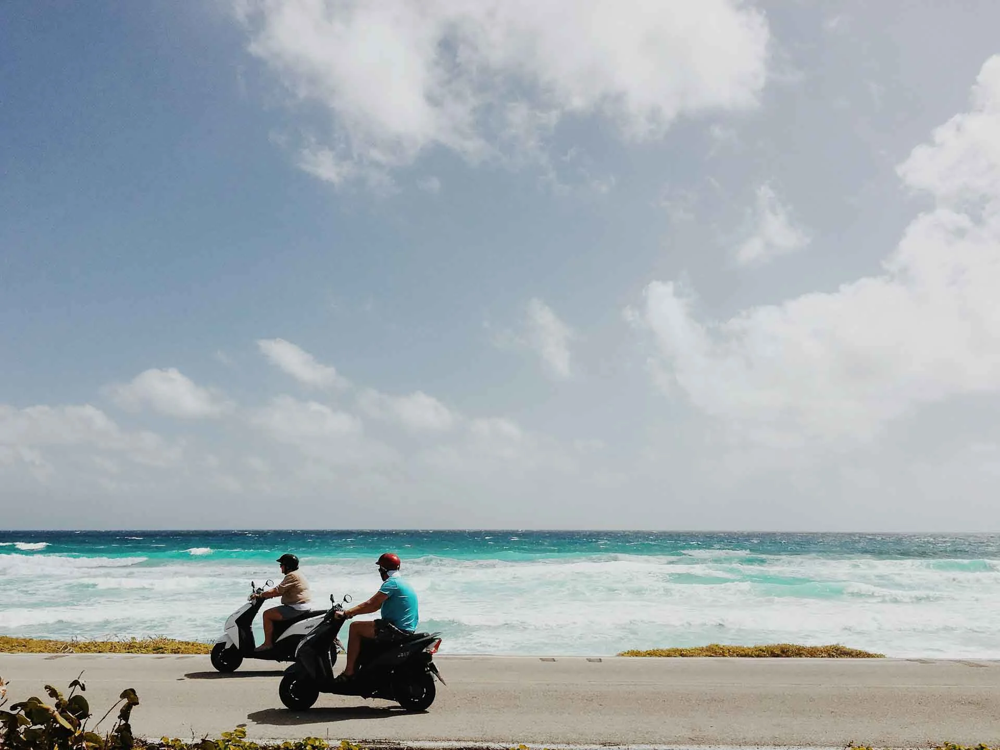
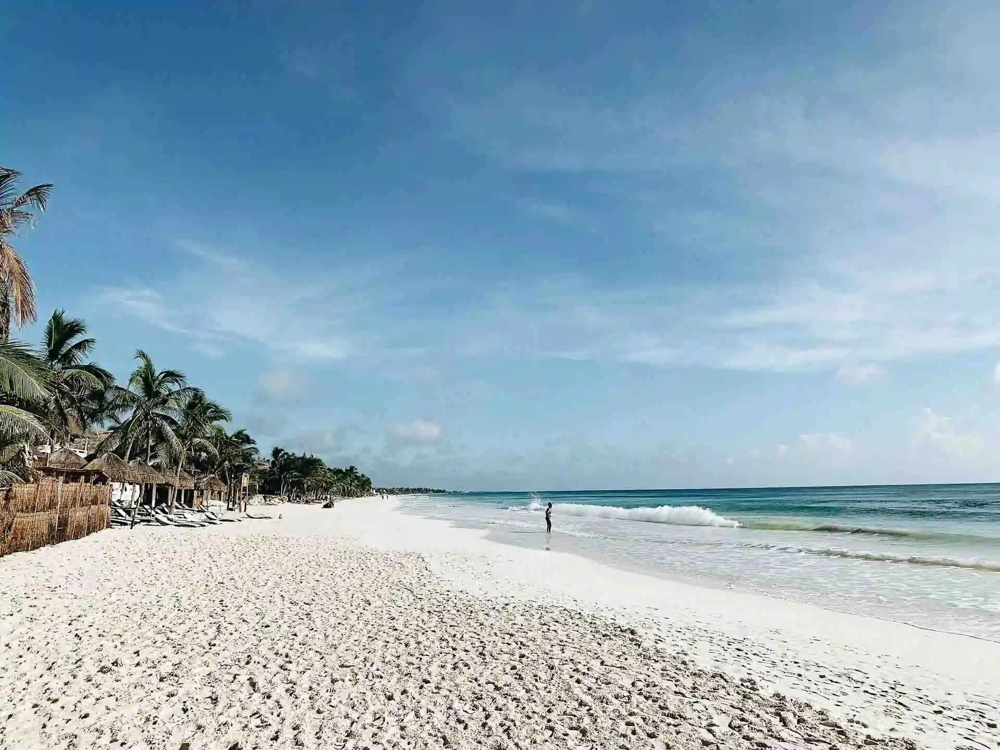

About our rental options
Experience the ultimate freedom of exploration with Scoots, your go-to motor scooter rental company on the island of Cozumel. Whether you're a local seeking adventure or a tourist craving discovery, our convenient locations near ferry docks and cruise ports make it easy to find us.
Dive into the vibrant streets of el Centro de Cozumel or escape the touristy crowds by exploring the tranquil coasts and inlets along the southern and eastern shores.
RentOur Facilities
Our company has two physical rental locations on Cozumel. One is near the Playa del Carmen-Cozumel Ferry dock in el Centro de Cozumel and the other is near the Terminal Puerta Maya further south along the coast which caters to the cruise lines and patrons.
Playa del Carmen
Terminal Puerta Maya
 Weather in April
In April, Cozumel welcomes visitors with its warm and inviting weather, making it an ideal time to explore the island's stunning landscapes and vibrant culture. With temperatures ranging from the comfortable mid-70s to the pleasant mid-80s Fahrenheit (around 24-30 degrees Celsius), April offers delightful conditions for outdoor activities. The island experiences minimal rainfall during this month, with occasional brief showers that quickly give way to clear skies and ample sunshine. Whether you're diving into the crystal-clear waters of the Caribbean Sea, strolling along pristine beaches, or discovering ancient Mayan ruins, April in Cozumel promises an enchanting blend of relaxation and adventure amidst the perfect tropical climate.